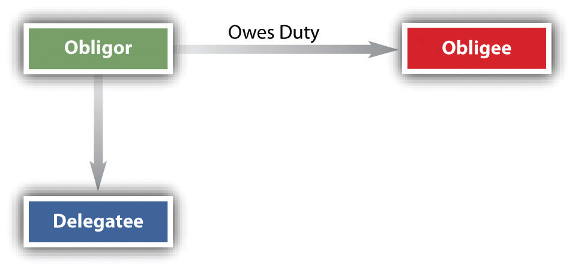

After reading this chapter, you should understand the following:
To this point, we have focused on the rights and duties of the two parties to the contract. In this chapter, we turn our attention to contracts in which outsiders acquire rights or duties or both. Three types of outsiders merit examination:
Contracts create rights and duties. By an assignmentThe passing or delivering by one person to another of the right to a contract benefit., an obligeeOne to whom an obligation is owed. (one who has the right to receive a contract benefit) transfers a right to receive a contract benefit owed by the obligorOne who owes an obligation. (the one who has a duty to perform) to a third person (assigneeOne to whom the right to receive benefit of a contract is passed or delivered.); the obligee then becomes an assignorOne who agrees to allow another to receive the benefit of a contract. (one who makes an assignment).
The Restatement (Second) of Contracts defines an assignment of a right as “a manifestation of the assignor’s intention to transfer it by virtue of which the assignor’s right to performance by the obligor is extinguished in whole or in part and the assignee acquires the right to such performance.”Restatement (Second) of Contracts, Section 317(1). The one who makes the assignment is both an obligee and a transferor. The assignee acquires the right to receive the contractual obligations of the promisor, who is referred to as the obligor (see Figure 14.1 "Assignment of Rights"). The assignor may assign any right unless (1) doing so would materially change the obligation of the obligor, materially burden him, increase his risk, or otherwise diminish the value to him of the original contract; (2) statute or public policy forbids the assignment; or (3) the contract itself precludes assignment. The common law of contracts and Articles 2 and 9 of the Uniform Commercial Code (UCC) govern assignments. Assignments are an important part of business financing, such as factoring. A factorA person who pays money to receive another’s executory contractual benefits. is one who purchases the right to receive income from another.
Figure 14.1 Assignment of Rights

To effect an assignment, the assignor must make known his intention to transfer the rights to the third person. The assignor’s intention must be that the assignment is effective without need of any further action or any further manifestation of intention to make the assignment. In other words, the assignor must intend and understand himself to be making the assignment then and there; he is not promising to make the assignment sometime in the future.
Under the UCC, any assignments of rights in excess of $5,000 must be in writing, but otherwise, assignments can be oral and consideration is not required: the assignor could assign the right to the assignee for nothing (not likely in commercial transactions, of course). Mrs. Franklin has the right to receive $750 a month from the sale of a house she formerly owned; she assigns the right to receive the money to her son Jason, as a gift. The assignment is good, though such a gratuitous assignment is usually revocable, which is not the case where consideration has been paid for an assignment.
For the assignment to become effective, the assignee must manifest his acceptance under most circumstances. This is done automatically when, as is usually the case, the assignee has given consideration for the assignment (i.e., there is a contract between the assignor and the assignee in which the assignment is the assignor’s consideration), and then the assignment is not revocable without the assignee’s consent. Problems of acceptance normally arise only when the assignor intends the assignment as a gift. Then, for the assignment to be irrevocable, either the assignee must manifest his acceptance or the assignor must notify the assignee in writing of the assignment.
Notice to the obligor is not required, but an obligor who renders performance to the assignor without notice of the assignment (that performance of the contract is to be rendered now to the assignee) is discharged. Obviously, the assignor cannot then keep the consideration he has received; he owes it to the assignee. But if notice is given to the obligor and she performs to the assignor anyway, the assignee can recover from either the obligor or the assignee, so the obligor could have to perform twice, as in Exercise 2 at the chapter’s end, Aldana v. Colonial Palms Plaza. Of course, an obligor who receives notice of the assignment from the assignee will want to be sure the assignment has really occurred. After all, anybody could waltz up to the obligor and say, “I’m the assignee of your contract with the bank. From now on, pay me the $500 a month, not the bank.” The obligor is entitled to verification of the assignment.
An assignment of rights effectively makes the assignee stand in the shoes ofAn assignee takes no greater rights than his assignor had. the assignor. He gains all the rights against the obligor that the assignor had, but no more. An obligor who could avoid the assignor’s attempt to enforce the rights could avoid a similar attempt by the assignee. Likewise, under UCC Section 9-318(1), the assignee of an account is subject to all terms of the contract between the debtor and the creditor-assignor. Suppose Dealer sells a car to Buyer on a contract where Buyer is to pay $300 per month and the car is warranted for 50,000 miles. If the car goes on the fritz before then and Dealer won’t fix it, Buyer could fix it for, say, $250 and deduct that $250 from the amount owed Dealer on the next installment (called a setoff). Now, if Dealer assigns the contract to Assignee, Assignee stands in Dealer’s shoes, and Buyer could likewise deduct the $250 from payment to Assignee.
The “shoe rule” does not apply to two types of assignments. First, it is inapplicable to the sale of a negotiable instrument to a holder in due course. Second, the rule may be waived: under the UCC and at common law, the obligor may agree in the original contract not to raise defenses against the assignee that could have been raised against the assignor.Uniform Commercial Code, Section 9-206. While a waiver of defensesSurrender by a party of legal rights otherwise available to him or her. makes the assignment more marketable from the assignee’s point of view, it is a situation fraught with peril to an obligor, who may sign a contract without understanding the full import of the waiver. Under the waiver rule, for example, a farmer who buys a tractor on credit and discovers later that it does not work would still be required to pay a credit company that purchased the contract; his defense that the merchandise was shoddy would be unavailing (he would, as used to be said, be “having to pay on a dead horse”).
For that reason, there are various rules that limit both the holder in due course and the waiver rule. Certain defenses, the so-called real defenses (infancy, duress, and fraud in the execution, among others), may always be asserted. Also, the waiver clause in the contract must have been presented in good faith, and if the assignee has actual notice of a defense that the buyer or lessee could raise, then the waiver is ineffective. Moreover, in consumer transactions, the UCC’s rule is subject to state laws that protect consumers (people buying things used primarily for personal, family, or household purposes), and many states, by statute or court decision, have made waivers of defenses ineffective in such consumer transactionsA contract for household or domestic purposes, not commercial purposes.. Federal Trade Commission regulations also affect the ability of many sellers to pass on rights to assignees free of defenses that buyers could raise against them. Because of these various limitations on the holder in due course and on waivers, the “shoe rule” will not govern in consumer transactions and, if there are real defenses or the assignee does not act in good faith, in business transactions as well.
The general rule—as previously noted—is that most contract rights are assignable. But there are exceptions. Five of them are noted here.
When an assignment has the effect of materially changing the duties that the obligor must perform, it is ineffective. Changing the party to whom the obligor must make a payment is not a material change of duty that will defeat an assignment, since that, of course, is the purpose behind most assignments. Nor will a minor change in the duties the obligor must perform defeat the assignment.
Several residents in the town of Centerville sign up on an annual basis with the Centerville Times to receive their morning paper. A customer who is moving out of town may assign his right to receive the paper to someone else within the delivery route. As long as the assignee pays for the paper, the assignment is effective; the only relationship the obligor has to the assignee is a routine delivery in exchange for payment. Obligors can consent in the original contract, however, to a subsequent assignment of duties. Here is a clause from the World Team Tennis League contract: “It is mutually agreed that the Club shall have the right to sell, assign, trade and transfer this contract to another Club in the League, and the Player agrees to accept and be bound by such sale, exchange, assignment or transfer and to faithfully perform and carry out his or her obligations under this contract as if it had been entered into by the Player and such other Club.” Consent is not necessary when the contract does not involve a personal relationship.
When it matters to the obligor who receives the benefit of his duty to perform under the contract, then the receipt of the benefit is a personal rightThe right or duty of a particular person to perform or receive contract duties or benefits; cannot be assigned. that cannot be assigned. For example, a student seeking to earn pocket money during the school year signs up to do research work for a professor she admires and with whom she is friendly. The professor assigns the contract to one of his colleagues with whom the student does not get along. The assignment is ineffective because it matters to the student (the obligor) who the person of the assignee is. An insurance company provides auto insurance covering Mohammed Kareem, a sixty-five-year-old man who drives very carefully. Kareem cannot assign the contract to his seventeen-year-old grandson because it matters to the insurance company who the person of its insured is. Tenants usually cannot assign (sublet) their tenancies without the landlord’s permission because it matters to the landlord who the person of their tenant is. Section 14.4.1 "Nonassignable Rights", Nassau Hotel Co. v. Barnett & Barse Corp., is an example of the nonassignability of a personal right.
Various federal and state laws prohibit or regulate some contract assignment. The assignment of future wages is regulated by state and federal law to protect people from improvidently denying themselves future income because of immediate present financial difficulties. And even in the absence of statute, public policy might prohibit some assignments.
Assignability of contract rights is useful, and prohibitions against it are not generally favored. Many contracts contain general language that prohibits assignment of rights or of “the contract.” Both the Restatement and UCC Section 2-210(3) declare that in the absence of any contrary circumstances, a provision in the agreement that prohibits assigning “the contract” bars “only the delegation to the assignee of the assignor’s performance.”Restatement (Second) of Contracts, Section 322. In other words, unless the contract specifically prohibits assignment of any of its terms, a party is free to assign anything except his or her own duties.
Even if a contractual provision explicitly prohibits it, a right to damages for breach of the whole contract is assignable under UCC Section 2-210(2) in contracts for goods. Likewise, UCC Section 9-318(4) invalidates any contract provision that prohibits assigning sums already due or to become due. Indeed, in some states, at common law, a clause specifically prohibiting assignment will fail. For example, the buyer and the seller agree to the sale of land and to a provision barring assignment of the rights under the contract. The buyer pays the full price, but the seller refuses to convey. The buyer then assigns to her friend the right to obtain title to the land from the seller. The latter’s objection that the contract precludes such an assignment will fall on deaf ears in some states; the assignment is effective, and the friend may sue for the title.
The law distinguishes between assigning future rights under an existing contract and assigning rights that will arise from a future contract. Rights contingent on a future event can be assigned in exactly the same manner as existing rights, as long as the contingent rights are already incorporated in a contract. Ben has a long-standing deal with his neighbor, Mrs. Robinson, to keep the latter’s walk clear of snow at twenty dollars a snowfall. Ben is saving his money for a new printer, but when he is eighty dollars shy of the purchase price, he becomes impatient and cajoles a friend into loaning him the balance. In return, Ben assigns his friend the earnings from the next four snowfalls. The assignment is effective. However, a right that will arise from a future contract cannot be the subject of a present assignment.
An assignor may assign part of a contractual right, but only if the obligor can perform that part of his contractual obligation separately from the remainder of his obligation. Assignment of part of a payment due is always enforceable. However, if the obligor objects, neither the assignor nor the assignee may sue him unless both are party to the suit. Mrs. Robinson owes Ben one hundred dollars. Ben assigns fifty dollars of that sum to his friend. Mrs. Robinson is perplexed by this assignment and refuses to pay until the situation is explained to her satisfaction. The friend brings suit against Mrs. Robinson. The court cannot hear the case unless Ben is also a party to the suit. This ensures all parties to the dispute are present at once and avoids multiple lawsuits.
It may happen that an assignor assigns the same interest twice (see Figure 14.2 "Successive Assignments"). With certain exceptions, the first assignee takes precedence over any subsequent assignee. One obvious exception is when the first assignment is ineffective or revocable. A subsequent assignment has the effect of revoking a prior assignment that is ineffective or revocable. Another exception: if in good faith the subsequent assignee gives consideration for the assignment and has no knowledge of the prior assignment, he takes precedence whenever he obtains payment from, performance from, or a judgment against the obligor, or whenever he receives some tangible evidence from the assignor that the right has been assigned (e.g., a bank deposit book or an insurance policy).
Some states follow the different English rule: the first assignee to give notice to the obligor has priority, regardless of the order in which the assignments were made. Furthermore, if the assignment falls within the filing requirements of UCC Article 9 (see Chapter 33 "Secured Transactions and Suretyship"), the first assignee to file will prevail.
Figure 14.2 Successive Assignments
An assignor has legal responsibilities in making assignments. He cannot blithely assign the same interests pell-mell and escape liability. Unless the contract explicitly states to the contrary, a person who assigns a right for value makes certain assignor’s warrantiesPromises, express or implied, made by an assignor to the assignee about the merits of the assignment. to the assignee: that he will not upset the assignment, that he has the right to make it, and that there are no defenses that will defeat it. However, the assignor does not guarantee payment; assignment does not by itself amount to a warranty that the obligor is solvent or will perform as agreed in the original contract. Mrs. Robinson owes Ben fifty dollars. Ben assigns this sum to his friend. Before the friend collects, Ben releases Mrs. Robinson from her obligation. The friend may sue Ben for the fifty dollars. Or again, if Ben represents to his friend that Mrs. Robinson owes him (Ben) fifty dollars and assigns his friend that amount, but in fact Mrs. Robinson does not owe Ben that much, then Ben has breached his assignor’s warranty. The assignor’s warranties may be express or implied.
Generally, it is OK for an obligee to assign the right to receive contractual performance from the obligor to a third party. The effect of the assignment is to make the assignee stand in the shoes of the assignor, taking all the latter’s rights and all the defenses against nonperformance that the obligor might raise against the assignor. But the obligor may agree in advance to waive defenses against the assignee, unless such waiver is prohibited by law.
There are some exceptions to the rule that contract rights are assignable. Some, such as personal rights, are not circumstances where the obligor’s duties would materially change, cases where assignability is forbidden by statute or public policy, or, with some limits, cases where the contract itself prohibits assignment. Partial assignments and successive assignments can happen, and rules govern the resolution of problems arising from them.
When the assignor makes the assignment, that person makes certain warranties, express or implied, to the assignee, basically to the effect that the assignment is good and the assignor knows of no reason why the assignee will not get performance from the obligor.
To this point, we have been considering the assignment of the assignor’s rights (usually, though not solely, to money payments). But in every contract, a right connotes a corresponding duty, and these may be delegated. A delegationThe passing or delivering by one person to another of the duty to perform a contract. is the transfer to a third party of the duty to perform under a contract. The one who delegates is the delegatorOne who delegates.. Because most obligees are also obligors, most assignments of rights will simultaneously carry with them the delegation of duties. Unless public policy or the contract itself bars the delegation, it is legally enforceable.
In most states, at common law, duties must be expressly delegated. Under Uniform Commercial Code (UCC) Section 2-210(4) and in a minority of states at common law (as illustrated in Section 14.4.2 "Assignment Includes Delegation", Rose v. Vulcan Materials Co.), an assignment of “the contract” or of “all my rights under the contract” is not only an assignment of rights but also a delegation of duties to be performed; by accepting the assignment, the delegateeOne to whom the duty to perform a contract is delegated. (one to whom the delegation is made) implies a promise to perform the duties. (See Figure 14.3 "Delegation of Duties")
Figure 14.3 Delegation of Duties
An obligor who delegates a duty (and becomes a delegator) does not thereby escape liability for performing the duty himself. The obligee of the duty may continue to look to the obligor for performance unless the original contract specifically provides for substitution by delegation. This is a big difference between assignment of contract rights and delegation of contract duties: in the former, the assignor is discharged (absent breach of assignor’s warranties); in the latter, the delegator remains liable. The obligee (again, the one to whom the duty to perform flows) may also, in many cases, look to the delegatee, because the obligee becomes an intended beneficiary of the contract between the obligor and the delegatee, as discussed in Section 14.3 "Third-Party Beneficiaries". Of course, the obligee may subsequently agree to accept the delegatee and discharge the obligor from any further responsibility for performing the duty. A contract among three persons having this effect is called a novationA new contract substituting for an old one, or a new party to a contract replacing a former party.; it is a new contract. Fred sells his house to Lisa, who assumes his mortgage. Fred, in other words, has delegated the duty to pay the bank to Lisa. If Lisa defaults, Fred continues to be liable to the bank, unless in the original mortgage agreement a provision specifically permitted any purchaser to be substituted without recourse to Fred, or unless the bank subsequently accepts Lisa and discharges Fred.
Personal services are not delegable. If the contract is such that the promisee expects the obligor personally to perform the duty, the obligor may not delegate it. Suppose the Catskill Civic Opera Association hires a famous singer to sing in its production of Carmen and the singer delegates the job to her understudy. The delegation is ineffective, and performance by the understudy does not absolve the famous singer of liability for breach.
Many duties may be delegated, however. Indeed, if they could not be delegated, much of the world’s work would not get done. If you hire a construction company and an architect to design and build your house to certain specifications, the contractor may in turn hire individual craftspeople—plumbers, electricians, and the like—to do these specialized jobs, and as long as they are performed to specification, the contract terms will have been met. If you hired an architecture firm, though, you might not be contracting for the specific services of a particular individual in that firm.
Public policy may prohibit certain kinds of delegations. A public official, for example, may not delegate the duties of her office to private citizens, although various statutes generally permit the delegation of duties to her assistants and subordinates.
As we have already noted, the contract itself may bar assignment. The law generally disfavors restricting the right to assign a benefit, but it will uphold a contract provision that prohibits delegation of a duty. Thus, as we have seen, UCC Section 2-210(3) states that in a contract for sale of goods, a provision against assigning “the contract” is to be construed only as a prohibition against delegating the duties.
The duty to perform a contractual obligation may usually be delegated to a third party. Such delegation, however, does not discharge the delegator, who remains liable on the contract absent a novation.
Some duties may not be delegated: personal services cannot be, and public policy or the contract itself may bar delegation.
The fundamental issue with third-party beneficiaries gets to this: can a person who is not a party to a contract sue to enforce its terms?
The general rule is this: persons not a party to a contract cannot enforce its terms; they are said to lack privityThe relationship of the immediate parties to a contract, a “private” relationship, as between retailer and customer., a private, face-to-face relationship with the contracting parties. But if the persons are intended to benefit from the performance of a contract between others, then they can enforce it: they are intended beneficiaries.
In the vocabulary of the Restatement, a third person whom the parties to the contract intend to benefit is an intended beneficiaryA person not a party to a contract who was intended to benefit from it and who may sue to enforce its terms.—that is, one who is entitled under the law of contracts to assert a right arising from a contract to which he or she is not a party. There are two types of intended beneficiaries.
A creditor beneficiaryOne whom the party paying for the other’s performance intends to benefit as payment for a debt or obligation. is one to whom the promisor agrees to pay a debt of the promisee. For example, a father is bound by law to support his child. If the child’s uncle (the promisor) contracts with the father (the promisee) to furnish support for the child, the child is a creditor beneficiary and could sue the uncle. Or again, suppose Customer pays Ace Dealer for a new car, and Ace delegates the duty of delivery to Beta Dealer. Ace is now a debtor: he owes Customer something: a car. Customer is a creditor; she is owed something: a car. When Beta performs under his delegated contract with Ace, Beta is discharging the debt Ace owes to Customer. Customer is a creditor beneficiary of Dealers’ contract and could sue either one for nondelivery. She could sue Ace because she made a contract with him, and she could sue Beta because—again—she was intended to benefit from the performance of Dealers’ agreement.
The second type of intended beneficiary is a donee beneficiaryA person not a party to a contract who is intended, as a gift, to benefit from its performance.. When the promisee is not indebted to the third person but intends for him or her to have the benefit of the promisor’s performance, the third person is a donee beneficiary (and the promise is sometimes called a gift promise). For example, an insurance company (the promisor) promises to its policyholder (the promisee), in return for a premium, to pay $100,000 to his wife on his death; this makes the wife a donee beneficiary (see Figure 14.1 "Assignment of Rights"). The wife could sue to enforce the contract although she was not a party to it. Or if Able makes a contract with Woodsman for the latter to cut the trees in Able’s backyard as a Christmas gift to Able’s uphill Neighbor (so that Neighbor will have a view), Neighbor could sue Woodsman for breach of the contract.
If a person is not an intended beneficiary—not a creditor or donee beneficiary—then he or she is said to be only an incidental beneficiaryA person not a party to a contract who benefits from its performance but was not intended to specifically., and that person has no rights. So if Able makes the contract with Woodsman not to benefit Neighbor but for Able’s own benefit, the fact that the tree removal would benefit Neighbor does not make Neighbor an intended beneficiary.
The beneficiary’s rights are always limited by the terms of the contract. A failure by the promisee to perform his part of the bargain will terminate the beneficiary’s rights if the promisee’s lapse terminates his own rights, absent language in the contract to the contrary. If Able makes the contract as a gift to Neighbor but doesn’t make the required down payment to Woodsman, Neighbor’s claim fails. In a suit by the beneficiary, the promisor may avail himself of any defense he could have asserted against the promisee. Woodsman may defend himself against Neighbor’s claim that Woodsman did not do the whole job by showing that Able didn’t make full payment for the work.
Conferring rights on an intended beneficiary is relatively simple. Whether his rights can be modified or extinguished by subsequent agreement of the promisor and promisee is a more troublesome issue. The general rule is that the beneficiary’s rights may be altered as long as there has been no vesting of rightsThe time at which the benefit of a contract is fixed in the beneficiary. (the rights have not taken effect). The time at which the beneficiary’s rights vest differs among jurisdictions: some say immediately, some say when the beneficiary assents to the receipt of the contract right, some say the beneficiary’s rights don’t vest until she has detrimentally relied on the right. The Restatement says that unless the contract provides that its terms cannot be changed without the beneficiary’s consent, the parties may change or rescind the benefit unless the beneficiary has sued on the promise, has detrimentally relied, or has assented to the promise at the request of one of the parties.Restatement (Second) of Contracts, Section 311. Some contracts provide that the benefit never vests; for example, standard insurance policies today reserve to the insured the right to substitute beneficiaries, to borrow against the policy, to assign it, and to surrender it for cash.
The general rule is that members of the public are only incidental beneficiaries of contracts made by the government with a contractor to do public works. It is not illogical to see a contract between the government and a company pledged to perform a service on behalf of the public as one creating rights in particular members of the public, but the consequences of such a view could be extremely costly because everyone has some interest in public works and government services.
A restaurant chain, hearing that the county was planning to build a bridge that would reroute commuter traffic, might decide to open a restaurant on one side of the bridge; if it let contracts for construction only to discover that the bridge was to be delayed or canceled, could it sue the county’s contractor? In general, the answer is that it cannot. A promisor under contract to the government is not liable for the consequential damages to a member of the public arising from its failure to perform (or from a faulty performance) unless the agreement specifically calls for such liability or unless the promisee (the government) would itself be liable and a suit directly against the promisor would be consistent with the contract terms and public policy. When the government retains control over litigation or settlement of claims, or when it is easy for the public to insure itself against loss, or when the number and amount of claims would be excessive, the courts are less likely to declare individuals to be intended beneficiaries. But the service to be provided can be so tailored to the needs of particular persons that it makes sense to view them as intended beneficiaries—in the case, for example, of a service station licensed to perform emergency road repairs, as in Section 14.4.3 "Third party Beneficiaries and Foreseeable Damages", Kornblut v. Chevron Oil Co.
Generally, a person who is not a party to a contract cannot sue to enforce its terms. The exception is if the person is an intended beneficiary, either a creditor beneficiary or a donee beneficiary. Such third parties can enforce the contract made by others but only get such rights as the contract provides, and beneficiaries are subject to defenses that could be made against their benefactor.
The general rule is that members of the public are not intended beneficiaries of contracts made by the government, but only incidental beneficiaries.
Nassau Hotel Co. v. Barnett & Barse Corporation
147 N.Y.S. 283 (1914)
McLaughlin, J.
Plaintiff owns a hotel at Long Beach, L. I., and on the 21st of November, 1912, it entered into a written agreement with the individual defendants Barnett and Barse to conduct the same for a period of years.…Shortly after this agreement was signed, Barnett and Barse organized the Barnett & Barse Corporation with a capital stock of $10,000, and then assigned the agreement to it. Immediately following the assignment, the corporation went into possession and assumed to carry out its terms. The plaintiff thereupon brought this action to cancel the agreement and to recover possession of the hotel and furniture therein, on the ground that the agreement was not assignable. [Summary judgment in favor of the plaintiff, defendant corporation appeals.]
The only question presented is whether the agreement was assignable. It provided, according to the allegations of the complaint, that the plaintiff leased the property to Barnett and Barse with all its equipment and furniture for a period of three years, with a privilege of five successive renewals of three years each. It expressly provided:
‘That said lessees…become responsible for the operation of the said hotel and for the upkeep and maintenance thereof and of all its furniture and equipment in accordance with the terms of this agreement and the said lessees shall have the exclusive possession, control and management thereof. * * * The said lessees hereby covenant and agree that they will operate the said hotel at all times in a first-class business-like manner, keep the same open for at least six (6) months of each year, * * *’ and ‘in lieu of rental the lessor and lessees hereby covenant and agree that the gross receipts of such operation shall be, as received, divided between the parties hereto as follows: (a) Nineteen per cent. (19%) to the lessor. * * * In the event of the failure of the lessees well and truly to perform the covenants and agreements herein contained,’ they should be liable in the sum of $50,000 as liquidated damages. That ‘in consideration and upon condition that the said lessees shall well and faithfully perform all the covenants and agreements by them to be performed without evasion or delay the said lessor for itself and its successors, covenants and agrees that the said lessees, their legal representatives and assigns may at all times during said term and the renewals thereof peaceably have and enjoy the said demised premises.’ And that ‘this agreement shall inure to the benefit of and bind the respective parties hereto, their personal representatives, successors and assigns.’
The complaint further alleges that the agreement was entered into by plaintiff in reliance upon the financial responsibility of Barnett and Barse, their personal character, and especially the experience of Barnett in conducting hotels; that, though he at first held a controlling interest in the Barnett & Barse Corporation, he has since sold all his stock to the defendant Barse, and has no interest in the corporation and no longer devotes any time or attention to the management or operation of the hotel.
…[C]learly…the agreement in question was personal to Barnett and Barse and could not be assigned by them without the plaintiff’s consent. By its terms the plaintiff not only entrusted them with the care and management of the hotel and its furnishings—valued, according to the allegations of the complaint, at more than $1,000,000—but agreed to accept as rental or compensation a percentage of the gross receipts. Obviously, the receipts depended to a large extent upon the management, and the care of the property upon the personal character and responsibility of the persons in possession. When the whole agreement is read, it is apparent that the plaintiff relied, in making it, upon the personal covenants of Barnett and Barse. They were financially responsible. As already said, Barnett had had a long and successful experience in managing hotels, which was undoubtedly an inducing cause for plaintiff’s making the agreement in question and for personally obligating them to carry out its terms.
It is suggested that because there is a clause in the agreement to the effect that it should ‘inure to the benefit of and bind the respective parties hereto, their personal representatives and assigns,’ that Barnett and Barse had a right to assign it to the corporation. But the intention of the parties is to be gathered, not from one clause, but from the entire instrument [Citation] and when it is thus read it clearly appears that Barnett and Barse were to personally carry out the terms of the agreement and did not have a right to assign it. This follows from the language used, which shows that a personal trust or confidence was reposed by the plaintiff in Barnett and Barse when the agreement was made.
In [Citation] it was said: “Rights arising out of contract cannot be transferred if they…involve a relation of personal confidence such that the party whose agreement conferred those rights must have intended them to be exercised only by him in whom he actually confided.”
This rule was applied in [Citation] the court holding that the plaintiff—the assignee—was not only technically, but substantially, a different entity from its predecessor, and that the defendant was not obliged to entrust its money collected on the sale of the presses to the responsibility of an entirely different corporation from that with which it had contracted, and that the contract could not be assigned to the plaintiff without the assent of the other party to it.
The reason which underlies the basis of the rule is that a party has the right to the benefit contemplated from the character, credit, and substance of him with whom he contracts, and in such case he is not bound to recognize…an assignment of the contract.
The order appealed from, therefore, is affirmed.
Rose v. Vulcan Materials Co.
194 S.E.2d 521 (N.C. 1973)
Huskins, J.
…Plaintiff [Rose], after leasing his quarry to J. E. Dooley and Son, Inc., promised not to engage in the rock-crushing business within an eight-mile radius of [the city of] Elkin for a period of ten years. In return for this promise, J. E. Dooley and Son, Inc., promised, among other things, to furnish plaintiff stone f.o.b. the quarry site at Cycle, North Carolina, at stipulated prices for ten years.…
By a contract effective 23 April 1960, Vulcan Materials Company, a corporation…, purchased the stone quarry operations and the assets and obligations of J. E. Dooley and Son, Inc.…[Vulcan sent Rose a letter, part of which read:]
Mr. Dooley brought to us this morning the contracts between you and his companies, copies of which are attached. This is to advise that Vulcan Materials Company assumes all phases of these contracts and intends to carry out the conditions of these contracts as they are stated.
In early 1961 Vulcan notified plaintiff that it would no longer sell stone to him at the prices set out in [the agreement between Rose and Dooley] and would thereafter charge plaintiff the same prices charged all of its other customers for stone. Commencing 11 May 1961, Vulcan raised stone prices to the plaintiff to a level in excess of the prices specified in [the Rose-Dooley agreement].
At the time Vulcan increased the prices of stone to amounts in excess of those specified in [the Rose-Dooley contract], plaintiff was engaged in his ready-mix cement business, using large quantities of stone, and had no other practical source of supply. Advising Vulcan that he intended to sue for breach of contract, he continued to purchase stone from Vulcan under protest.…
The total of these amounts over and above the prices specified in [the Rose-Dooley contract] is $25,231.57, [about $152,000 in 2010 dollars] and plaintiff seeks to recover said amount in this action.
The [Rose-Dooley] agreement was an executory bilateral contract under which plaintiff’s promise not to compete for ten years gained him a ten-year option to buy stone at specified prices. In most states, the assignee of an executory bilateral contract is not liable to anyone for the nonperformance of the assignor’s duties thereunder unless he expressly promises his assignor or the other contracting party to perform, or ‘assume,’ such duties.…These states refuse to imply a promise to perform the duties, but if the assignee expressly promises his assignor to perform, he is liable to the other contracting party on a third-party beneficiary theory. And, if the assignee makes such a promise directly to the other contracting party upon a consideration, of course he is liable to him thereon. [Citation]
A minority of states holds that the assignee of an executory bilateral contract under a general assignment becomes not only assignee of the rights of the assignor but also delegatee of his duties; and that, absent a showing of contrary intent, the assignee impliedly promises the assignor that he will perform the duties so delegated. This rule is expressed in Restatement, Contracts, s 164 (1932) as follows:
(1) Where a party under a bilateral contract which is at the time wholly or partially executory on both sides purports to assign the whole contract, his action is interpreted, in the absence of circumstances showing a contrary intention, as an assignment of the assignor’s rights under the contract and a delegation of the performance of the assignor’s duties.
(2) Acceptance by the assignee of such an assignment is interpreted, in the absence of circumstances showing a contrary intention, as both an assent to become an assignee of the assignor’s rights and as a promise to the assignor to assume the performance of the assignor’s duties.’ (emphasis added)
We…adopt the Restatement rule and expressly hold that the assignee under a general assignment of an executory bilateral contract, in the absence of circumstances showing a contrary intention, becomes the delegatee of his assignor’s duties and impliedly promises his assignor that he will perform such duties.
The rule we adopt and reaffirm here is regarded as the more reasonable view by legal scholars and textwriters. Professor Grismore says:
It is submitted that the acceptance of an assignment in this form does presumptively import a tacit promise on the part of the assignee to assume the burdens of the contract, and that this presumption should prevail in the absence of the clear showing of a contrary intention. The presumption seems reasonable in view of the evident expectation of the parties. The assignment on its face indicates an intent to do more than simply to transfer the benefits assured by the contract. It purports to transfer the contract as a whole, and since the contract is made up of both benefits and burdens both must be intended to be included.…Grismore, Is the Assignee of a Contract Liable for the Nonperformance of Delegated Duties? 18 Mich.L.Rev. 284 (1920).
In addition, with respect to transactions governed by the Uniform Commercial Code, an assignment of a contract in general terms is a delegation of performance of the duties of the assignor, and its acceptance by the assignee constitutes a promise by him to perform those duties. Our holding in this case maintains a desirable uniformity in the field of contract liability.
We further hold that the other party to the original contract may sue the assignee as a third-party beneficiary of his promise of performance which he impliedly makes to his assignor, under the rule above laid down, by accepting the general assignment. Younce v. Lumber Co., [Citation] (1908), holds that where the assignee makes an express promise of performance to his assignor, the other contracting party may sue him for breach thereof. We see no reason why the same result should not obtain where the assignee breaches his promise of performance implied under the rule of Restatement s 164. ‘That the assignee is liable at the suit of the third party where he expressly assumes and promises to perform delegated duties has already been decided in a few cases (citing Younce). If an express promise will support such an action it is difficult to see why a tacit promise should not have the same effect.’ Grismore, supra. Parenthetically, we note that such is the rule under the Uniform Commercial Code, [2-210].
We now apply the foregoing principles to the case at hand. The contract of 23 April 1960, between defendant and J. E. Dooley and Son, Inc., under which, as stipulated by the parties, ‘the defendant purchased the assets and obligations of J. E. Dooley and Son, Inc.,’ was a general assignment of all the assets and obligations of J. E. Dooley and Son, Inc., including those under [the Rose-Dooley contract]. When defendant accepted such assignment it thereby became delegatee of its assignor’s duties under it and impliedly promised to perform such duties.
When defendant later failed to perform such duties by refusing to continue sales of stone to plaintiff at the prices specified in [the Rose-Dooley contract], it breached its implied promise of performance and plaintiff was entitled to bring suit thereon as a third-party beneficiary.
The decision…is reversed with directions that the case be certified to the Superior Court of Forsyth County for reinstatement of the judgment of the trial court in accordance with this opinion.
Kornblut v. Chevron Oil Co.
62 A.D.2d 831 (N.Y. 1978)
Hopkins, J.
The plaintiff-respondent has recovered a judgment after a jury trial in the sum of $519,855.98 [about $1.9 million in 2010 dollars] including interest, costs and disbursements, against Chevron Oil Company (Chevron) and Lawrence Ettinger, Inc. (Ettinger) (hereafter collectively referred to as defendants) for damages arising from the death and injuries suffered by Fred Kornblut, her husband. The case went to the jury on the theory that the decedent was the third-party beneficiary of a contract between Chevron and the New York State Thruway Authority and a contract between Chevron and Ettinger.
On the afternoon of an extremely warm day in early August, 1970 the decedent was driving northward on the New York State Thruway. Near Sloatsburg, New York, at about 3:00 p.m., his automobile sustained a flat tire. At the time the decedent was accompanied by his wife and 12-year-old son. The decedent waited for assistance in the 92 degree temperature.
After about an hour a State Trooper, finding the disabled car, stopped and talked to the decedent. The trooper radioed Ettinger, which had the exclusive right to render service on the Thruway under an assignment of a contract between Chevron and the Thruway Authority. Thereafter, other State Troopers reported the disabled car and the decedent was told in each instance that he would receive assistance within 20 minutes.
Having not received any assistance by 6:00 p.m., the decedent attempted to change the tire himself. He finally succeeded, although he experienced difficulty and complained of chest pains to the point that his wife and son were compelled to lift the flat tire into the trunk of the automobile. The decedent drove the car to the next service area, where he was taken by ambulance to a hospital; his condition was later diagnosed as a myocardial infarction. He died 28 days later.
Plaintiff sued, inter alia, Chevron and Ettinger alleging in her complaint causes of action sounding in negligence and breach of contract. We need not consider the issue of negligence, since the Trial Judge instructed the jury only on the theory of breach of contract, and the plaintiff has recovered damages for wrongful death and the pain and suffering only on that theory.
We must look, then, to the terms of the contract sought to be enforced. Chevron agreed to provide “rapid and efficient roadside automotive service on a 24-hour basis from each gasoline service station facility for the areas…when informed by the authority or its police personnel of a disabled vehicle on the Thruway”. Chevron’s vehicles are required “to be used and operated in such a manner as will produce adequate service to the public, as determined in the authority’s sole judgment and discretion”. Chevron specifically covenanted that it would have “sufficient roadside automotive service vehicles, equipment and personnel to provide roadside automotive service to disabled vehicles within a maximum of thirty (30) minutes from the time a call is assigned to a service vehicle, subject to unavoidable delays due to extremely adverse weather conditions or traffic conditions.”…
In interpreting the contract, we must bear in mind the circumstances under which the parties bargained. The New York Thruway is a limited access toll highway, designed to move traffic at the highest legal speed, with the north and south lanes separated by green strips. Any disabled vehicle on the road impeding the flow of traffic may be a hazard and inconvenience to the other users. The income realized from tolls is generated from the expectation of the user that he will be able to travel swiftly and smoothly along the Thruway. Consequently, it is in the interest of the authority that disabled vehicles will be repaired or removed quickly to the end that any hazard and inconvenience will be minimized. Moreover, the design and purpose of the highway make difficult, if not impossible, the summoning of aid from garages not located on the Thruway. The movement of a large number of vehicles at high speed creates a risk to the operator of a vehicle who attempts to make his own repairs, as well as to the other users. These considerations clearly prompted the making of contracts with service organizations which would be located at points near in distance and time on the Thruway for the relief of distressed vehicles.
Thus, it is obvious that, although the authority had an interest in making provision for roadside calls through a contract, there was also a personal interest of the user served by the contract. Indeed, the contract provisions regulating the charges for calls and commanding refunds be paid directly to the user for overcharges, evince a protection and benefit extended to the user only. Hence, in the event of an overcharge, the user would be enabled to sue on the contract to obtain a recovery.…Here the contract contemplates an individual benefit for the breach running to the user.…
By choosing the theory of recovery based on contract, it became incumbent on the plaintiff to show that the injury was one which the defendants had reason to foresee as a probable result of the breach, under the ancient doctrine of Hadley v Baxendale [Citation], and the cases following it…in distinction to the requirement of proximate cause in tort actions.…
The death of the decedent on account of his exertion in the unusual heat of the midsummer day in changing the tire cannot be said to have been within the contemplation of the contracting parties as a reasonably foreseeable result of the failure of Chevron or its assignee to comply with the contract.…
The case comes down to this, then, in our view: though the decedent was the intended beneficiary to sue under certain provisions of the contract—such as the rate specified for services to be rendered—he was not the intended beneficiary to sue for consequential damages arising from personal injury because of a failure to render service promptly. Under these circumstances, the judgment must be reversed and the complaint dismissed, without costs or disbursements.
[Martuscello, J., concurred in the result but opined that the travelling public was not an intended beneficiary of the contract.]
The general rule that the promisee may assign any right has some exceptions—for example, when the promisor’s obligation would be materially changed. Of course the contract itself may prohibit assignment, and sometimes statutes preclude it. Knowing how to make the assignment effective and what the consequences of the assignment are on others is worth mastering. When, for example, does the assignee not stand in the assignor’s shoes? When may a future right be assigned?
Duties, as well as rights, may be transferred to third parties. Most rights (promises) contained in contracts have corresponding duties (also expressed as promises). Often when an entire contract is assigned, the duties go with it; the transferee is known, with respect to the duties, as the delegatee. The transferor himself does not necessarily escape the duty, however. Moreover, some duties are nondelegable, such as personal promises and those that public policy require to be carried out by a particular official. Without the ability to assign rights and duties, much of the modern economy would grind to a halt.
The parties to a contract are not necessarily the only people who acquire rights or duties under it. One major category of persons acquiring rights is third-party beneficiaries. Only intended beneficiaries acquire rights under the contract, and these are of two types: creditor and donee beneficiaries. The rules for determining whether rights have been conferred are rather straightforward; determining whether rights can subsequently be modified or extinguished is more troublesome. Generally, as long as the contract does not prohibit change and as long as the beneficiary has not relied on the promise, the change may be made.
Yellow Cab contracted with the Birmingham Board of Education to transport physically handicapped students. The contract provided, “Yellow Cab will transport the physically handicapped students of the School System…and furnish all necessary vehicles and personnel and will perform all maintenance and make all repairs to the equipment to keep it in a safe and efficient operating condition at all times.”
Yellow Cab subcontracted with Metro Limousine to provide transportation in connection with its contract with the board. Thereafter, Metro purchased two buses from Yellow Cab to use in transporting the students. DuPont, a Metro employee, was injured when the brakes on the bus that he was driving failed, causing the bus to collide with a tree. DuPont sued Yellow Cab, alleging that under its contract with the board, Yellow Cab had a nondelegable duty to properly maintain the bus so as to keep it in a safe operating condition; that that duty flowed to him as an intended third-party beneficiary of the contract; and that Yellow Cab had breached the contract by failing to properly maintain the bus. Who wins?DuPont v. Yellow Cab Co. of Birmingham, Inc., 565 So.2d 190 (Ala. 1990).
A creditor beneficiary is
Assignments are not allowed
When an assignor assigns the same interest twice,
Factoring
Personal promises